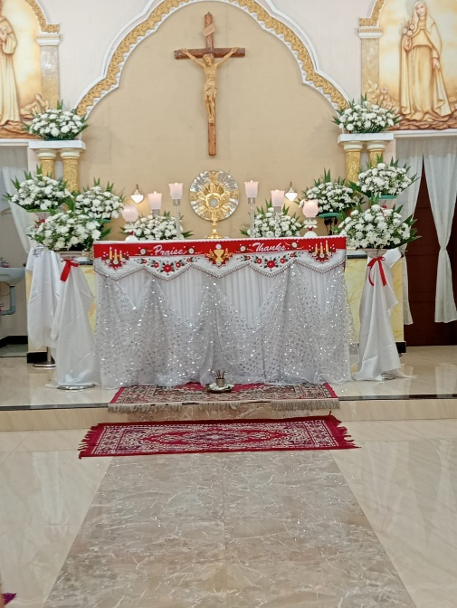
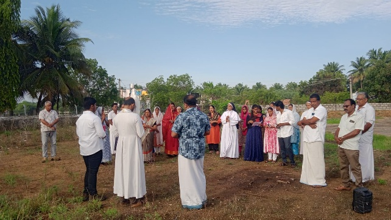
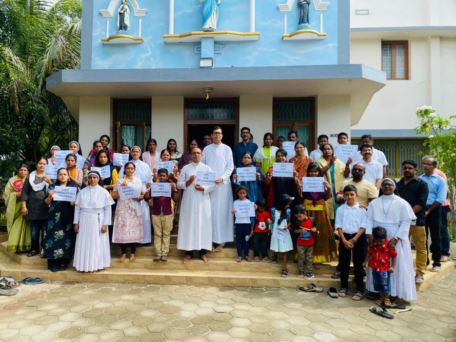
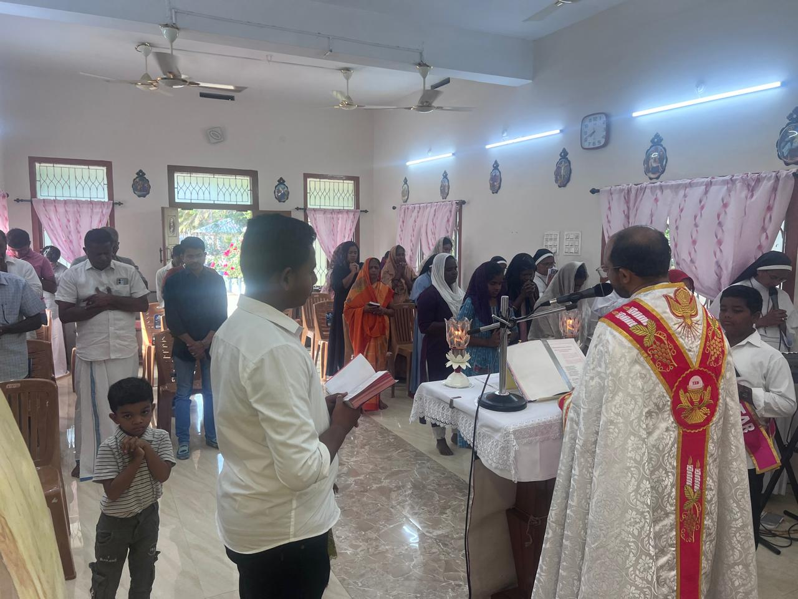
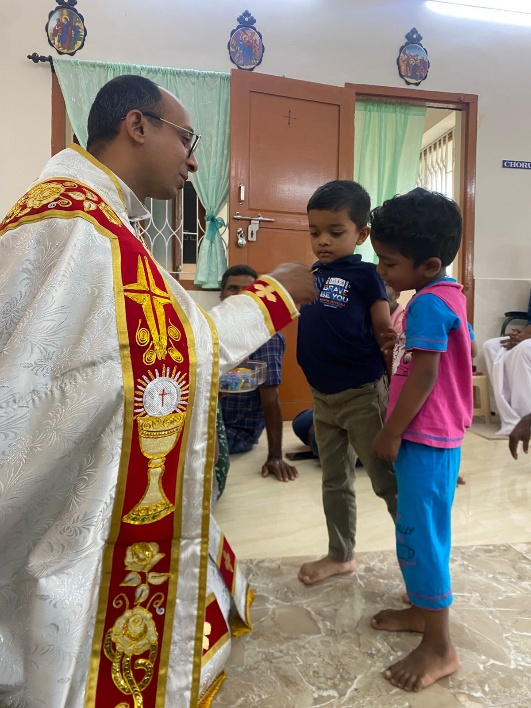
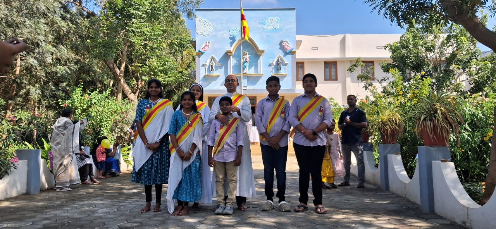
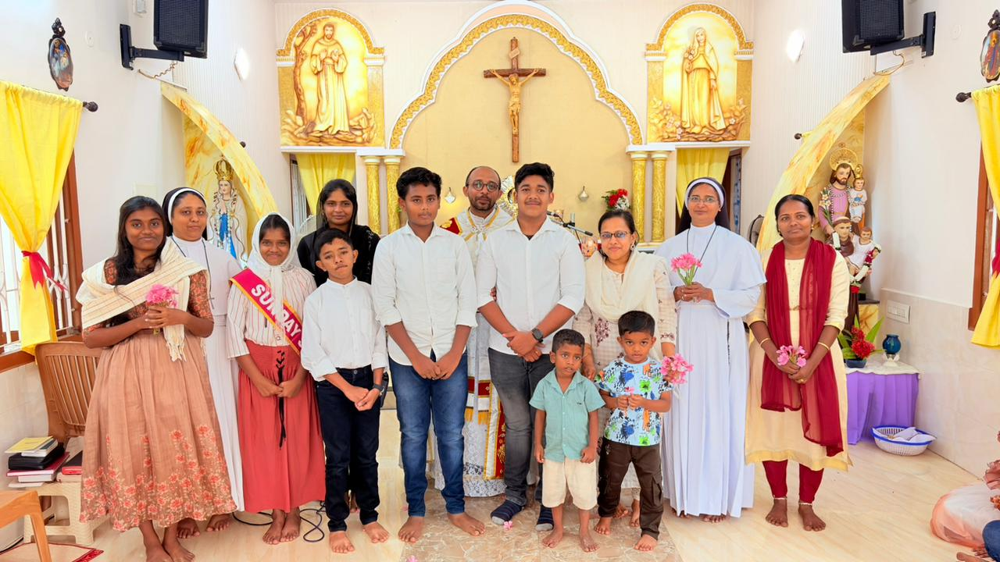

1993
The first Masses
Rev. Fr. Johnson Veeppattuparambil, under the pastoral leadership of the late Mar Joseph Irimpen, Bishop of Palghat, regularly visited families and celebrated Holy Mass in their homes.
A journey of faith · Since September 1993
The story of St. Antony’s Mission Centre, Kangeyam is a story of faithful perseverance — from Holy Mass celebrated in homes to the prayerful preparation for a permanent place of worship.

Kangeyam, situated in Tiruppur District, Tamil Nadu, is a historically significant town known for its agricultural heritage, cattle-rearing tradition, and the renowned Kangeyam breed of cattle. Located in the semi-arid region of western Tamil Nadu, it serves as an important centre for the surrounding civil districts namely Coimbatore, Erode, Karur and Dindigul and small rural areas.
The history of St. Antony’s Mission Centre, Kangeyam, dates back to September 1993, when the Catholic faithful in and around Kangeyam had no permanent place of worship.
Each chapter brought the community one step closer to a permanent spiritual home.
Rev. Fr. Johnson Veeppattuparambil, under the pastoral leadership of the late Mar Joseph Irimpen, Bishop of Palghat, regularly visited families and celebrated Holy Mass in their homes.
On September 16, 1994, FCC sisters belonging to Seraphic FCC Palakkad Province purchased land for building a convent and school.
Rev. Fr. Joseph Chittilapilly was appointed for the spiritual ministry of the community.
His Excellency Mar Jacob Manathodath, Bishop of Palghat, blessed the convent on 19 November 1997, marking an important milestone in the parish community’s spiritual journey.
On 28 September 2025, His Excellency Mar Paul Alappatt, Bishop of the Diocese of Ramanathapuram, submitted a request for 30 cents of land at Mercy Covenant, Kadaiyur.
The Provincial Council of the Seraphic FCC Province, Palakkad, approved the proposal on 2 October 2025, and the land was registered as a gift deed on 22 October 2025.

“With gratitude and renewed hope, the faithful are prayerfully preparing to build a small permanent place of worship on this blessed land.”
Through Divine Providence, the long-held hope for a centre of their own has entered a new chapter. The faithful of 12 families are now preparing in prayer and gratitude.
The parish community expresses its heartfelt gratitude to Rev. Sr. Little Flower FCC, Provincial Superior and the Provincial Team for their generous gesture.
St. Antony’s Mission Centre, Kangeyam is a Catholic faith community whose journey began in September 1993, when the faithful in and around Kangeyam had no permanent place of worship.
Through the dedication of priests, religious sisters and faithful families, the community continued its spiritual journey through Holy Mass, prayer and fellowship. Today, the community is prayerfully preparing for a small permanent place of worship.
Our story is one of faith, gratitude and renewed hope — a shared journey that continues to grow with the grace of God.
Snapshots from the community’s worship, celebrations and shared journey.





05 / Looking ahead
The journey continues with prayer, gratitude and renewed hope. What began with Masses in family homes is moving toward a small permanent place of worship for the Kangeyam community.